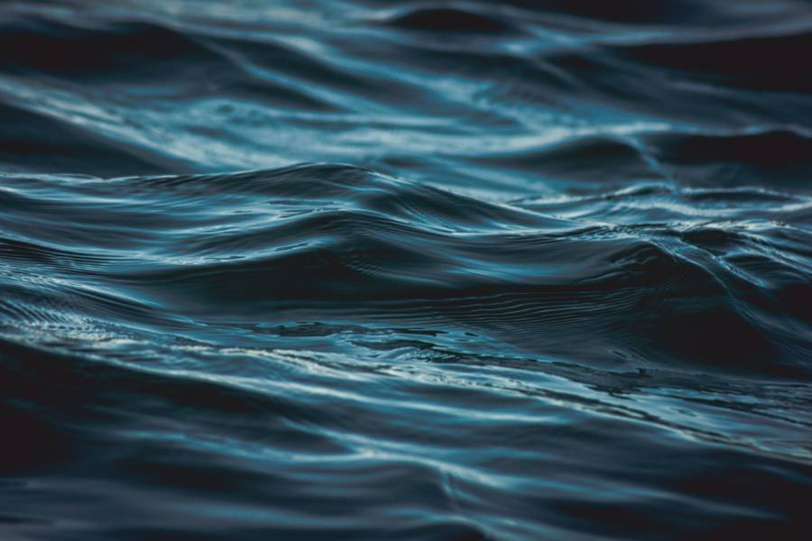
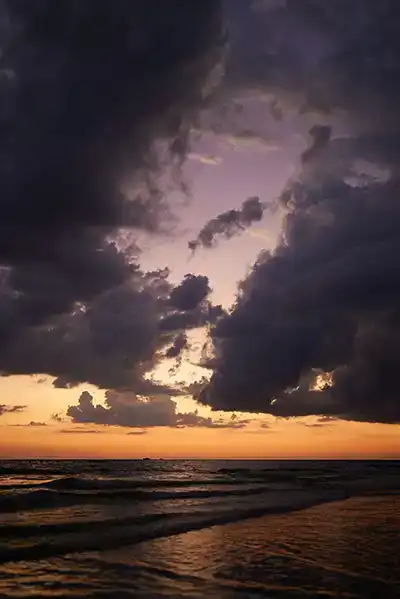

Skywave


Who is Skywave?
Skywave is an alternative duo consisting of Grant and Jarrett. Since originating in 2021, the project has carved out a unique sonic space by merging haunting, atmospheric textures with raw, rhythmic energy. Their sound balances the technical edge of modern alt-rock with deep, moody electronics, capturing a vibe that is as heavy as it is melodic.
What are some of their songs?
Since making their debut album, they have had some hit songs, including:
- Crystal Clouds
- High Tide
- Where the Sea Meets the Sky
Who are their inspirations?
Skywaves unique blend of sound came from their main Songwriters favorite songs and bands: